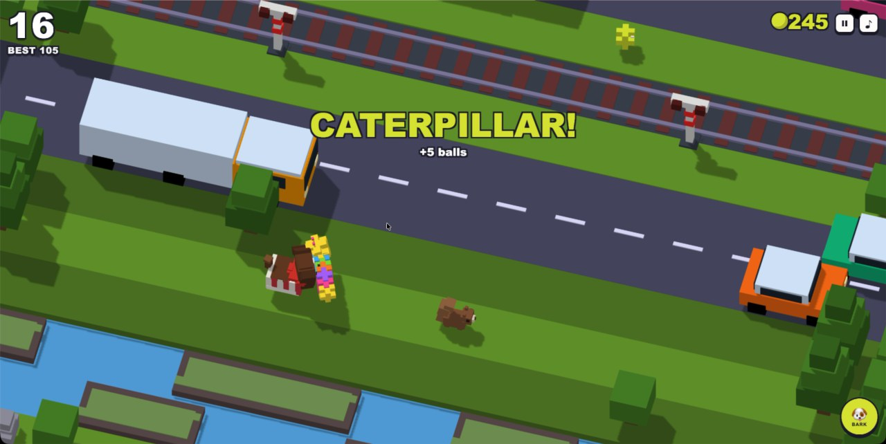

Charlie Road
A browser replica of Crossy Road with Charlie, our nine-year-old cocker spaniel, in the chicken's place. It keeps the bones of the original (the voxel look, one hop per input, endless roads, rivers, and railways, a camera that punishes dawdling) and swaps in what matters to him: tennis balls instead of coins, a bark that stops traffic, squirrels to chase, his real outfits as unlocks, a giant caterpillar toy worth five balls, and a squirrel-piloted flying saucer where the eagle used to be.
The first version came out of thirty minutes in class with Kiro: five iterations from colored rectangles to a fake-isometric board that never quite worked. The rebuild took an evening at home with Claude Code. I measured the camera angle from real gameplay screenshots, wrote a spec with machine-checkable acceptance criteria and fairness rules for the world generator, and let an autonomous run build it block by block, checking each block by stepping the simulation through a debug harness rather than trusting a screenshot. A second round after playing it added the bark, the saucer, combos, a daily challenge, and a shareable trading card. Every prompt, decision, and build step is in the repo.
Play it · Play the 30-minute class prototype · Source, prompts, and build log on GitHub · Gameplay video